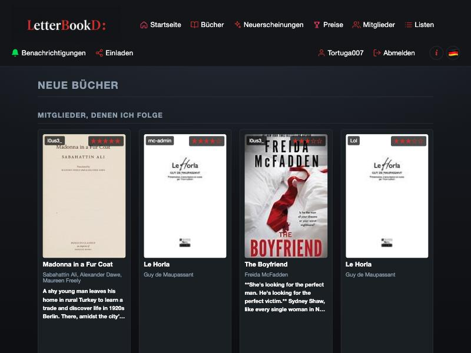

Startseite
Wozu es dient: Auf einen Blick sehen, was in deinen Clubs passiert: wer welches Buch mit welcher Bewertung hinzugefügt hat. Das ist deine Startseite nach der Anmeldung und das wichtigste Eingangstor zu den neuen Lektüren der anderen Mitglieder.

Ablauf
Die Seite öffnet sich mit „Neue Bücher“, aufgeteilt in zwei Bereiche: „Mitglieder, denen ich folge“ (die Mitglieder, die du als Favoriten markiert hast) und „Andere Mitglieder“ (die übrigen Mitglieder deiner Clubs).
Jede Karte zeigt das Cover, den Namen des Mitglieds, seine Bewertung (in Sternen), den Titel, den Autor und den Anfang seiner Rezension. Klicke auf ein Cover, um die Buchseite zu öffnen; klicke auf den Namen, um das Profil des Mitglieds zu sehen.
Aktionsketten
Jede Zeile beschreibt einen Auslöser in der Oberfläche, das sich öffnende Modal/Formular und den erzielten Effekt.
| Auslöser | Modal / Felder | Effekt |
|---|---|---|
| Navigationsleiste oben | Links: Startseite, Bücher, Neuerscheinungen, Preise, Mitglieder, Listen, Benachrichtigungen (grüne Glocke, wenn es etwas zu lesen gibt), Einladen. Rechts: Moderation (nur sichtbar, wenn du Admin bist), Name (Profil), Abmelden, Schaltfläche „i“ (Info), Flaggen-Schaltfläche (Sprache). | Jeder Link öffnet die entsprechende Seite. Die Glocke bei „Benachrichtigungen“ wird grün, wenn du ungelesene Benachrichtigungen hast. |
| Klick auf ein Cover oder einen Buchtitel | — | Öffnet die Detailseite des Buches: Rezensionen, Durchschnittsnote, Schaltflächen zum Bewerten, Vorschlagen und Hinzufügen zu einer Liste. |
| Klick auf einen Mitgliedsnamen | — | Öffnet das Profil des Mitglieds (seine Lektüren, Rezensionen und Listen, die in euren gemeinsamen Clubs sichtbar sind). |